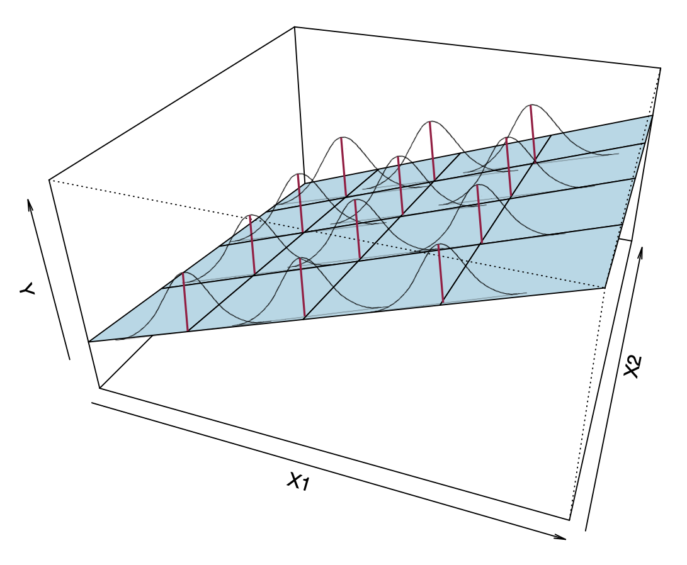
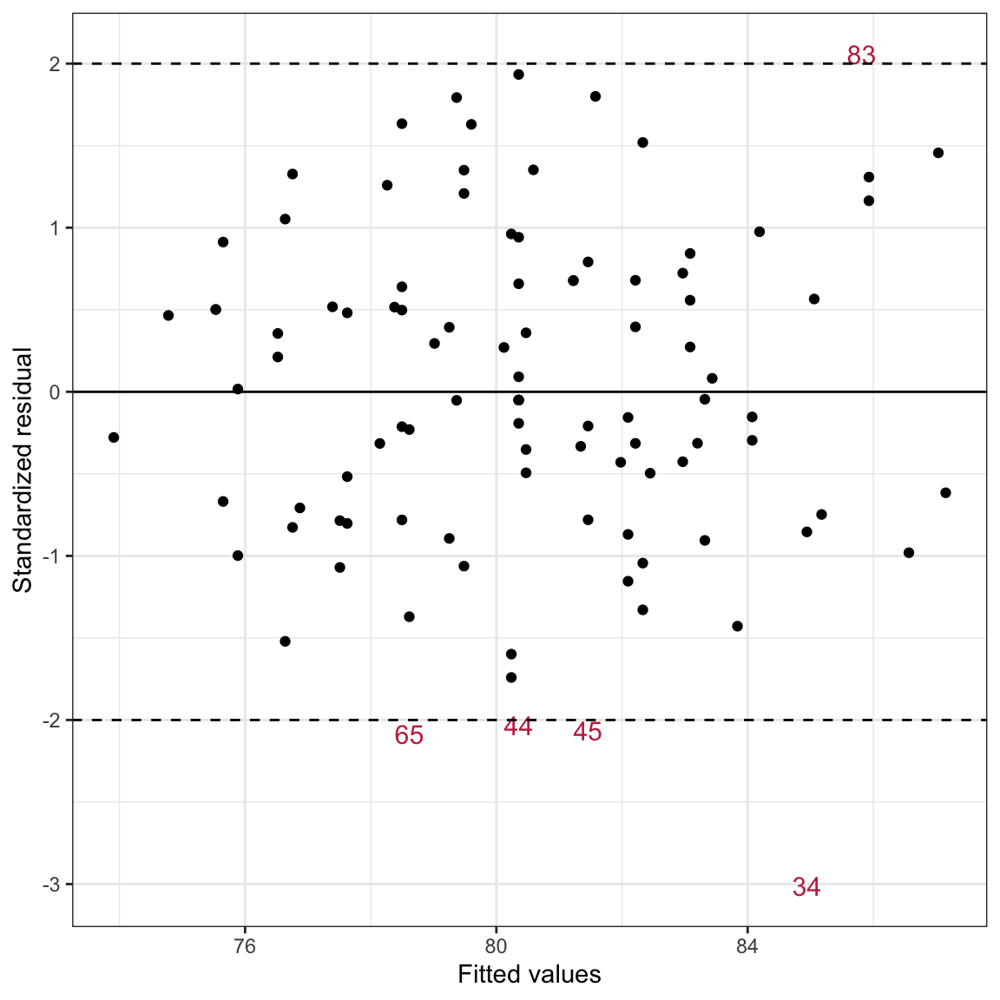

In this chapter, you will learn about the various distributional assumptions underlying the regression model. To do so, we will return to the keith-gpa.csv data to examine whether time spent on homework is related to GPA. To begin, we will load several libraries and import the data into an object called keith. We will also fit our multiple regression model.
# Fit multiple regression modellm.c =lm(gpa ~1+ parent_ed + homework, data = keith)
Recall that the distributional assumptions we make about the errors (\(\epsilon_i\) values) in the regression model in order for the results we obtain from fitting this model (e.g., coefficient estimates, p-values, CIs) to be valid are:
[L]inearity
[I]ndependence
[N]ormality
[E]qual variances (Homoskedasticity)
17.1 Distributional Assumptions for the Multiple Regression Model
These are the same four assumptions that we evaluate for multiple regression models. To help you see these assumptions, remember that the model for a multiple regression (with two predictors) is a plane that is fitted using observations composed of ordered triples, \((X_1,X_2,Y)\). Figure 8 visually shows the multiple regression model’s assumptions on a plane.
Figure 17.1: A visual depiction of the multiple regression model’s assumptions.

Now the conditional distributions that we put the assumptions on are the residuals (or Y-values) at each combination of (\(X_1\), \(X_2\)). The assumptions for the multiple regression model are similar to those for the simple model, namely,
Linearity: Notice from the visual that the MEAN values of each combination (\(X_1\), \(X_2\)) are linear in both the \(X_1\) and the \(X_2\) directions. This implies that the mean of each of the conditional distributions of residuals is zero at (\(X_1\), \(X_2\)).
Independence: Again, this is not shown in the figure. The assumption is that each residual value in a particular conditional distribution is independent from every other residual value in that same distribution.
Normality: This assumption indicates that each of the conditional distributions of residuals is normally distributed.
Homoskedasticity: The variance (or standard deviation) of all of the conditional distributions of residuals is exactly the same.
To evaluate these assumptions, we will create the exact same plots we created to evaluate the assumptions in the simple regression model, with one twist. Rather than creating the scatterplot by plotting the standardized residuals versus the X-value, we will plot them against the FITTED values (i.e., the \(\hat{Y}_i\) values). The fitted values from a multiple regression represent the weighted combination of both predictors, and thus give us the appropriate conditioning when we examine the distributions. (Remember, we want to consider the distribution of residuals at each (\(X_1\), \(X_2\)) combination.)
As an example, we will regress student GPAs on both time spent on homework and parent education levels.
# Augment the model to obtain the fitted values and residualsaug_c =augment(lm.c)head(aug_c)
# Density plot of the standardized residualsp1 =ggplot(data = aug_c, aes(x = .std.resid)) +stat_density_confidence(model ="normal") +stat_density(geom ="line", color ="#c62f4b") +theme_bw() +xlab("Standardized residual") +ylab("Probability density")# Plot the standardized residuals versus the fitted valuesp2 =ggplot(data = aug_c, aes(x = .fitted, y = .std.resid)) +geom_point() +geom_smooth(method ="lm", se =TRUE, color ="black", linewidth =0.5) +#ADD y=0 line and confidence envelopegeom_smooth(method ="loess", se =FALSE) +#ADD loess smoothertheme_bw() +geom_hline(yintercept =0) +geom_hline(yintercept =c(-2, 2), linetype ="dashed") +xlab("Fitted values") +ylab("Standardized residual")# Layout plotsp1 | p2
Figure 17.2: LEFT: Density plot of the marginal distribution of standardized residuals from the fitted regression model (raspberry line). The sampling uncertainty associated with the normal distribution is also displayed (blue shaded area). RIGHT: Scatterplot of the standardized residuals versus the fitted values from a regression model using time spent on homework and parent education level to predict GPA. A horizontal line at \(Y=0\) shows the expected mean residual under the linearity assumption. The loess line (blue) and uncertainty bands (grey shaded area) are also displayed. The \(Y=0\), \(Y=-2\) and \(Y=2\) lines have been included as a references for interpretation.
The density plot of the marginal distributio,n of standardized residuals is unimodal and roughly symmetric (raspberry line). While this shows slight deviation from normality the raspberry line depicting the density of the marginal distribution of standardized residuals lies completely within the blue area (where we would expect a density curve to lie in if it came from the normal distribution). This suggests that the deviation from the normal distribution in the sample data is consistent with just being sampling error. Thus we conclude that the normality assumption seems tenable.
The scatterplot shows random scatter around the \(Y=0\) line which indicates that the mean residual value is close to 0 (linearity) for all fitted values. Since the loess smoother is encompassed inside the confidence envelope (again, what where we expect the loess smoother to be if the assumption that the average residual is equal to 0 is actually met), the assumption of “linearity” also seems tenable.
The range of the standardized residuals at each fitted value also seems roughly the same indicating that the equal variances assumption seems tenable as well.
Lastly, since the observations were randomly sampled we believe the independence assumption is satisfied.
PROTIP
If any of the assumptions (aside from the independence assumption) do not seem reasonably satisfied, you can re-plot the residual plots based on the different simple regression models. (In this case we would look at the residuals versus time spent on homework and then the residuals versus parent education). This might help you identify if one, or both. of the predictors is the cause of the problem.
17.2 Identifying Extreme Cases
One potential reason that assumptions are violated occurs when there are cases with extreme residuals in the data; what we might call regression ouliers. The reference lines in the scatterplot at \(Y=-2\) and \(Y=+2\) help us identify these observations. (For large sample sizes these reference lines can be placed at \(Y=-3\) and \(Y=3\).) There are a few observations that have residuals that are more than two standard errors from the mean. This indicates students that have relatively high (positive residual) or low (negative residual) GPAs given the time they spend each week on homework and their parent education level. To be able to identify those cases in the data (for possible removal) we will label those cases with their row number.
# Create ID variable in the augmented dataaug_c = aug_c |>mutate(id =row.names(keith))# View new datahead(aug_c)
# Create different data sets for the extreme and non-extreme observationsextreme = aug_c |>filter(.std.resid <=-2| .std.resid >=2)nonextreme = aug_c |>filter(.std.resid >-2& .std.resid <2)# Plot using text for the extreme observations and points for the non-extremeggplot(data = extreme, aes(x = .fitted, y = .std.resid)) +geom_text(aes(label = id), size =4, color ="#c62f4b") +geom_point(data = nonextreme) +theme_bw() +geom_hline(yintercept =0) +geom_hline(yintercept =c(-2, 2), linetype ="dashed") +xlab("Fitted values") +ylab("Standardized residual")
Figure 17.3: Scatterplot of the standardized residuals versus the fitted values from a regression model using time spent on homework and parent education level to predict GPA. Students with standardized residuals more than two standard errors from 0 are identified by their row number. A horizontal lines at \(Y=0\), \(Y=-2\), and \(Y=+2\) are included to aid interpretation.

Observation 34 has the most extreme residual with a standardized residual value of around three standard error lower than we would expect. This student is really underperforming given their parent education level and the amount of time they spend on homework.
FYI
As a data analyst, because the assumptions were all reasonably satisfied, there is no need to remove any of the observations. But, as an educational practioner this student is “interesting”. If we had additional data or knew the participants, you could explore this student more to understand why their GPA is so low given where we would expect them to be. This could also be helpful in identifying students for potential interventions or testing.
17.3 Regression Model Revisited
To this point, we have been writing the regression model as a mathematical expression of the relationship between some outcome (\(Y\)) and a set of predictors (\(X_1,X_2,\ldots,X_k\)), namely as,
This is partially correct. A statistical model needs to represent the data generating process, which also embodies the set of underlying distributional assumptions. This implies that when we write out the regression model, it should include the mathematical relationship and the underlying distributional assumptions.
To read the distribution part of this expression, we say: the errors are independent and identically normally distributed with some variance.1
FYI
When we report regression results, we want to report parameter estimates for the data generating model. Notice that aside from the coefficient estimates, another parameter in the model (now that we have added the assumptions) is \(\sigma^2\). This is the estimate of the error variance (i.e., \(\sigma^2_{\epsilon}\)). That means we should report the estimate for this parameter, or for the square root of this parameter. This is why we report the sigma value (or RMSE) from the glance() output for our models. This is the estimate for \(\sigma_{\epsilon}\).
\(\overset{\mathrm{i.i.d~}}{\sim}\) = independent and identically distributed; \(\mathcal{N}\) indicates a normal distribution↩︎
![LEFT: Density plot of the marginal distribution of standardized residuals from the fitted regression model (raspberry line). The sampling uncertainty associated with the normal distribution is also displayed (blue shaded area). RIGHT: Scatterplot of the standardized residuals versus the fitted values from a regression model using time spent on homework and parent education level to predict GPA. A horizontal line at $Y=0$ shows the expected mean residual under the linearity assumption. The loess line (blue) and uncertainty bands (grey shaded area) are also displayed. The $Y=0$, $Y=-2$ and $Y=2$ lines have been included as a references for interpretation.](04-04-assumptions_files/figure-html/fig-assumptions-emp-mulreg-1.png)